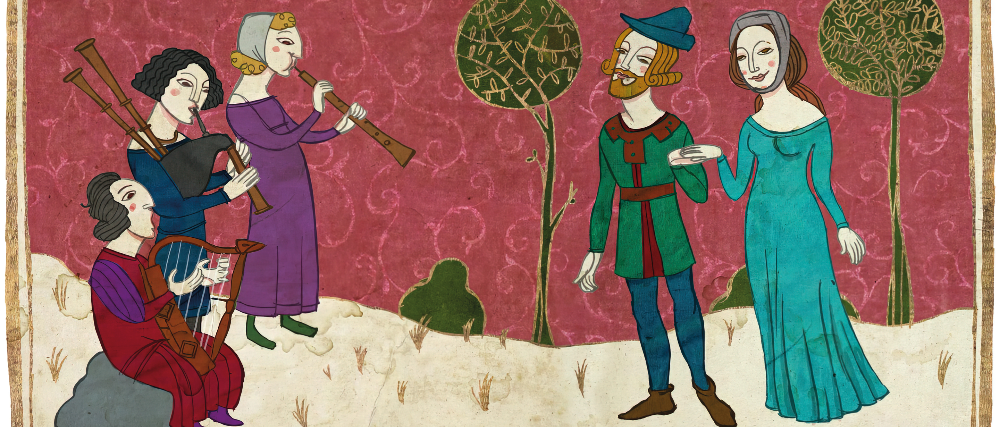
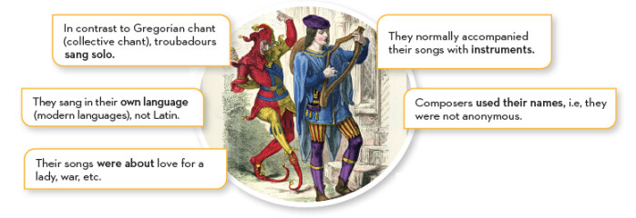

Monophonic secular music
When we talk about medieval music, one might think that music was only performed in churches, but this is not the case. Secular music developed mainly thanks to the troubadours and trouvères in the 12th and 13th centuries, particularly in France. The troubadours and trouvères were noble and educated people. They composed both the lyrics (poetry) and the music for their songs, although these were usually performed by minstrels or bards.

WE LISTEN AND WE DON'T JUDGE: SECULAR MIDDLE AGES
Listen to a clip of the song Tant ai aimé (I have loved so much), from medieval minstrel Conon de Béthune. In your Workbook, write about the differences you can hear in comparison to Gregorian chant.
(Bear in mind that the original composition dates from the 12th century and consists of just a single melodic line, with no harmony or chords. However, as it is a secular piece, it is highly likely that it was performed with instruments, which would have played the same melody as the voice, meaning that it remains monophonic in texture).
Conon de Béthune - Tant ai aimé (Tanto he amado)
From the previous listening, the following main characteristics of troubadour music can be deduced:
